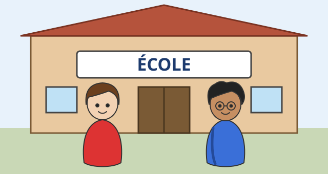

Laut und Schrift
Mit einem KI-Tutor lernen
Ein KI-Tutor erklärt dir diese Seite und hilft dir bei den Übungen. Wähl deinen Assistenten:
Mit Claude öffnen Mit ChatGPT öffnen Mit Mistral Vibe öffnen
Du nutzt dein eigenes Konto beim Anbieter. Der Assistent ist kein Angebot von lernapps.net: lernapps liefert nur Inhalte und Übungen. Die Wahl gilt für alle Seiten, nur auf diesem Gerät.
Worum es geht

Léa (links) zeigt Malik (rechts) die Schule. Auf dem Schild steht ÉCOLE. Das heißt „Schule“.
Quelle: eigene Zeichnung. Lizenz: CC-BY-4.0.Malik ist neu in Léas Klasse. Auf dem Schulhof hört er viele französische Wörter und möchte sie so sagen wie Léa.
Léa verrät ihm ein Geheimnis: Im Französischen schließen sich manche Buchstaben zu einem Team zusammen. Das Team klingt dann ganz anders als die einzelnen Buchstaben. Wer die fünf wichtigsten Teams kennt, kann schon viele Wörter lesen.
Danach kannst du: die Teams ou, oi, au / eau, ch und gn erkennen und aussprechen, so wie Léa und Malik.
Neu: Die fünf Buchstaben-Teams
- Buchstabenverbindung
Zwei oder drei Buchstaben, die zusammen einen einzigen Klang ergeben. Wir nennen sie hier „Buchstaben-Teams“.
| Team | Klingt wie | Beispiel |
|---|---|---|
| ou | langes „u“ | nous = „nu“ |
| oi | „ua“ | moi = „mua“ |
| au, eau | „o“ | le gâteau = „le gato“ |
| ch | „sch“ | le chat = „le scha“ |
| gn | „nj“ | la montagne = „la montanje“ |
Hier sind zu jedem Team zwei Wörter. Gleich sprichst du einige davon nach, die Hör-Knöpfe findest du im nächsten Abschnitt. Das kleine Wort davor (le, la) gehört zum Wort: Merke dir jedes Wort gleich mit ihm. Was le und la genau sind, erfährst du auf der Seite „Der bestimmte Artikel“.
| Team | Wort | Bedeutung |
|---|---|---|
| ou | le jour | der Tag |
| ou | la route | die Straße |
| oi | le soir | der Abend |
| oi | la voiture | das Auto |
| au | aussi | auch |
| eau | le bureau | das Büro |
| eau | le gâteau | der Kuchen |
| ch | le chat | die Katze |
| ch | le chocolat | die Schokolade |
| gn | la montagne | der Berg |
| gn | la campagne | das Land |
Merke
ou sind nicht „o“ und „u“ nacheinander, sondern ein einziger Klang. ch klingt wie das deutsche „sch“, nicht wie „k“. Am Ende eines Wortes hört man oft den letzten Buchstaben nicht: le chat klingt wie „le scha“.
Kurz geübt
Übung
Lösung
Richtige Antwort: Die Aussage stimmt nicht.
Nein: ch klingt wie „sch“. Die Katze heißt also „le scha“, nicht „le kat“.
Mehr dazu:
Hören und nachsprechen
Léa und Malik sprechen vor: Léa sagt le gâteau und la montagne, Malik le chat und den Satz Voici le chat. (das heißt „Hier ist die Katze.“). Höre zu, nimm dich selbst auf und vergleiche. Dann bewertest du dich selbst.
Übung
Hör zu, sprich nach und nimm dich auf. Vergleiche dann mit dem Original.
Tipp
Sprich langsam. Bei ou bleiben die Lippen rund wie bei „u“. Ein ganzer Satz klingt leichter, weil die Wörter ineinander übergehen.
- le chatKI
- le gâteauKI
- la montagneKI
- Voici le chat.KI
Zum Aufnehmen braucht diese Übung JavaScript. Die Beispiele kannst du auch ohne anhören.
Lösung
- le chat
- le gâteau
- la montagne
- Voici le chat.
Übung
Übung
Lösung
Richtige Antwort: ou – langes „u“ (Mut); oi – „ua“; au, eau – „o“ (Boot); ch – „sch“ (Schule); gn – „nj“ (Anja)
ou klingt wie ein langes „u“, oi wie „ua“, au und eau wie „o“, ch wie „sch“ und gn wie „nj“.
Mehr dazu:
Übung
Welches Team fehlt? Wähle die Buchstaben.
- die Straße → la r…te
- der Abend → le s…r
- die Katze → le …at
- der Berg → la monta…e
Lösung
- la route
- le soir
- le chat
- la montagne
Übung
Höre das Wort und schreibe es auf. Du kannst es so oft hören, wie du magst.
- KI
- KI
- KI
- KI
- KI
Lösung
- la route
- la voiture
- le bureau
- le chocolat
- la campagne
Übung
Schreibe das französische Wort mit seinem kleinen Wort davor (le oder la).
- die Katze
- der Abend
- das Büro
- der Kuchen
Lösung
- le chat
- le soir
- le bureau
- le gâteau